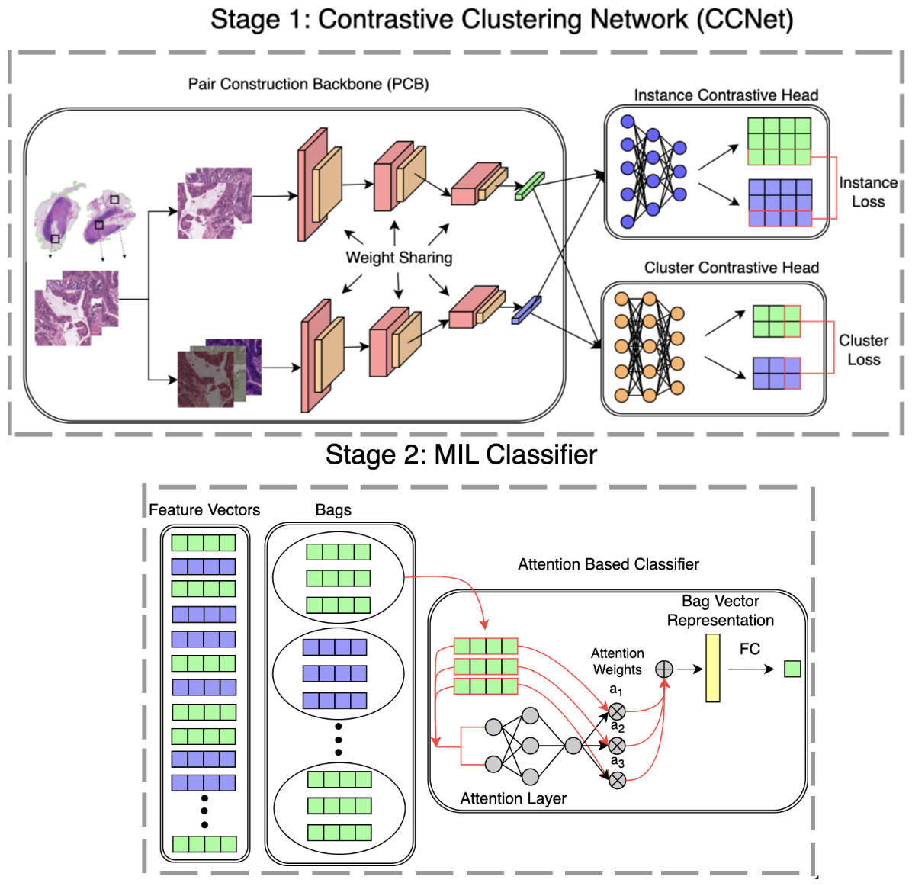
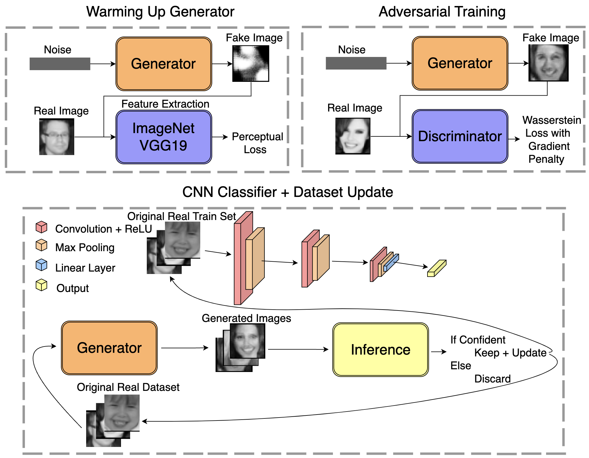
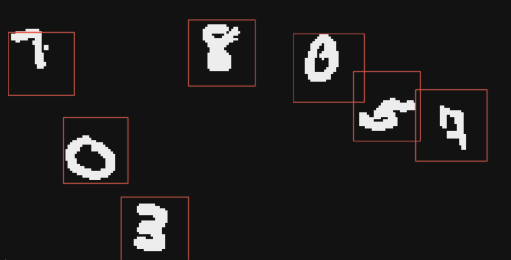
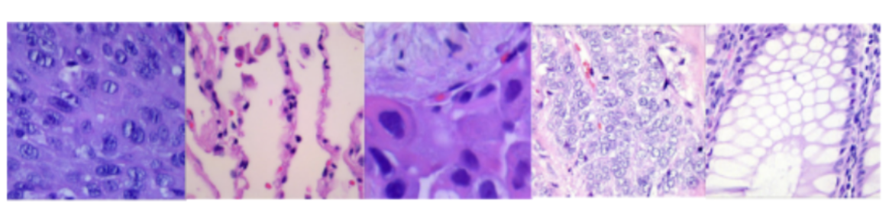
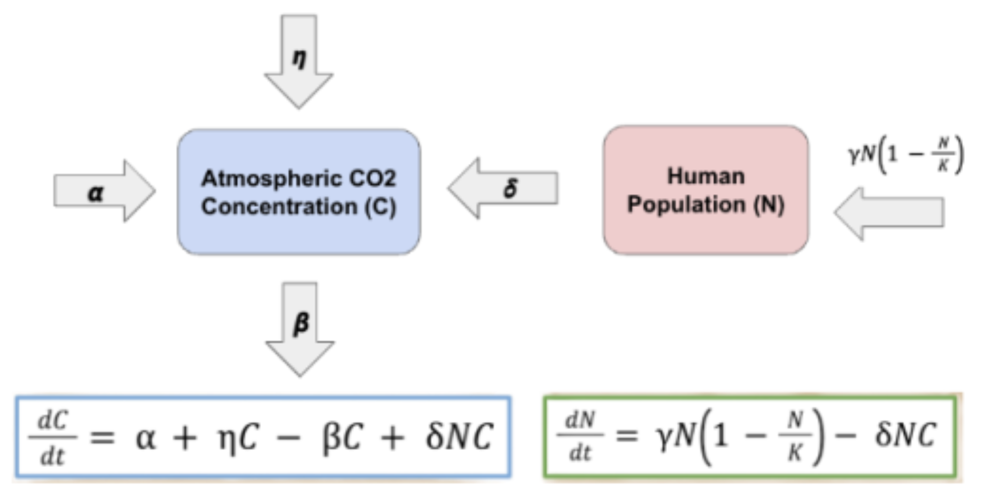

I am an incoming master's student studying Data Science at UC Berkeley. During my undergraduate studies, I majored in Applied Math at UC Merced, where I was fortunate to be advised by Professor Roummel Marcia. My research focused on applying deep learning to medical imaging, sparking my interest in computer vision and machine learning.
I aim to gain more experience through data science or machine learning internships. My background includes hands-on experience in training, evaluating, and optimizing models. I am particularly keen on exploring innovative machine learning applications across various industries. I eagerly anticipate contributing to the data-driven sector, networking with industry professionals, and discovering the expansive potential of data science!

This project focuses on advancing machine learning methods to analyze whole slide imaging (WSI) data for gastrointestinal cancer classification. Specifically, self-supervised learning and multiple-instance learning are employed to perform weakly supervised classification.

This project focuses on enhancing an emotion recognition classifier by iteratively leveraging a Generative Adversarial Network to synthesize additional training data. Through this iterative process, the model aims to increase the accuracy of classifying emotions.

This project is dedicated to digit recognition. The goal is to develop a robust model capable of performing digit detection and the accurate classification of digits from 0 to 99 with plans to expand its capabilities in the future.


This project explores the intricate relationship between atmospheric CO2 concentration and human activities. The aim is to develop a mathematical model that provides a comprehensive understanding of the factors driving atmospheric CO2 levels and their interactions with the human population.
February 2023 - May 2024, CA, Merced
June 2023 - August 2023, CA, Merced
July 2023 - August 2023, CA, Livermore
Representing undergraduate student interests and promoting mathematics and its applications among students at UC Merced. Follow UC Merced SIAM on Instagram.
Providing guidance and support to peers in Calculus, helping to clarify complex concepts and enhance overall academic performance. Learn more about the Learning Assistant Program.
Creating and leading workshops focused on Data Science, guiding and interacting with students to foster their enthusiasm and skills in the field. Follow UC Merced ACM on Instagram.